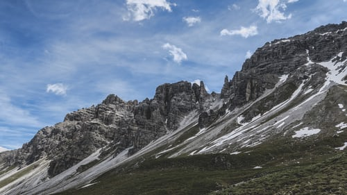
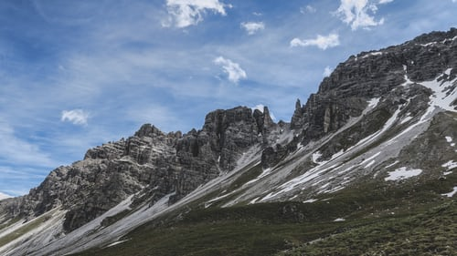

Choose your trip
We choose hotels which offer a great location, a high standard of comfort and quality, and a solid value to our guests. These inns offer a superbly satisfying mix of a welcoming atmosphere, traditional cuisine, and authentic charm. They are typically small, independently-owned properties which reflect the character and hospitality of the surrounding alpine community. We know the owners personally, have a longstanding relationship with them, and we find they bend over backwards to provide our guests with an exceptional experience.


 
